Code
```{r}
# install.packages("arrow")
library(arrow)
library(tidyverse)
```Enhance Speed with Arrow and Parquet
Jae Jung
March 21, 2026
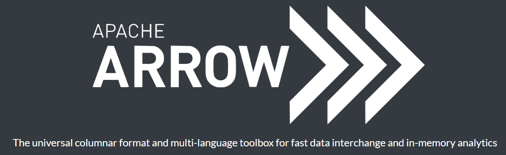
Apache Arrow is a language-agnostic software framework for developing data analytics applications that process columnar data. It contains a standardized column-oriented memory format that is able to represent flat and hierarchical data for efficient analytic operations on modern CPU and GPU hardware (https://en.wikipedia.org/).
Arrow can be used with Apache Parquet, Apache Spark, NumPy, PySpark, pandas and other data processing libraries. The project includes native software libraries written in C, C++, C#, Go, Java, JavaScript, Julia, MATLAB, Python (PyArrow[8]), R, Ruby, and Rust. Arrow allows for zero-copy reads and fast data access and interchange without serialization overhead between these languages and systems (https://en.wikipedia.org/).
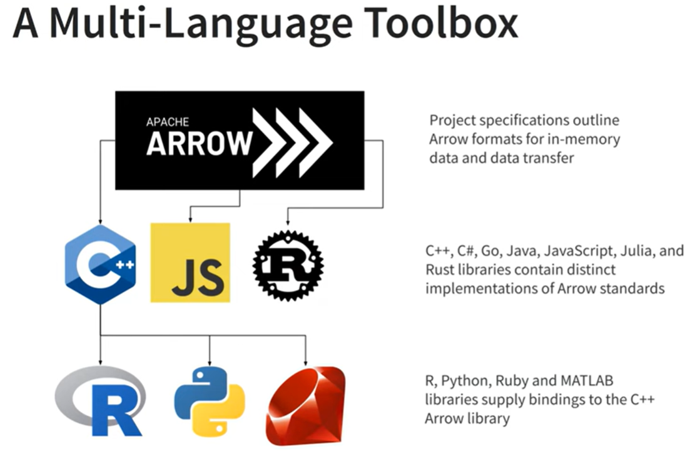
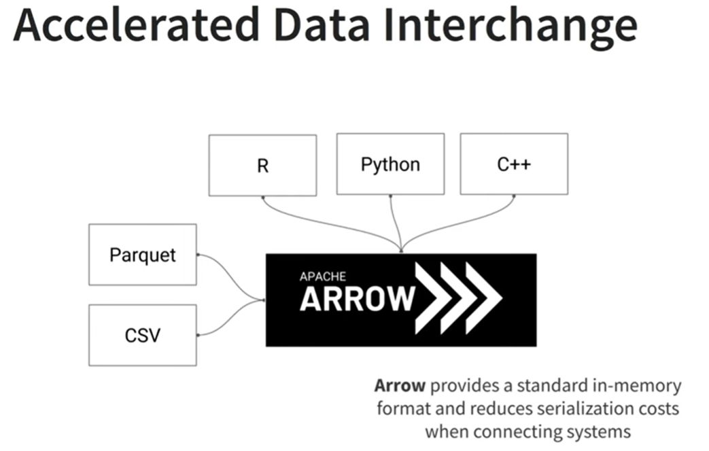
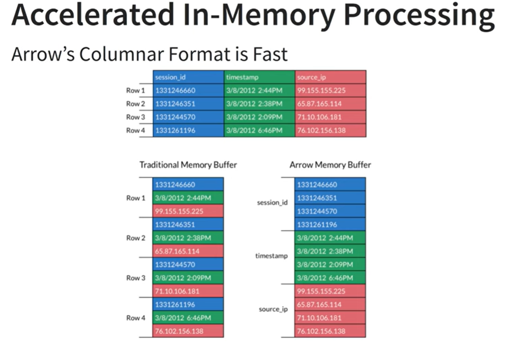
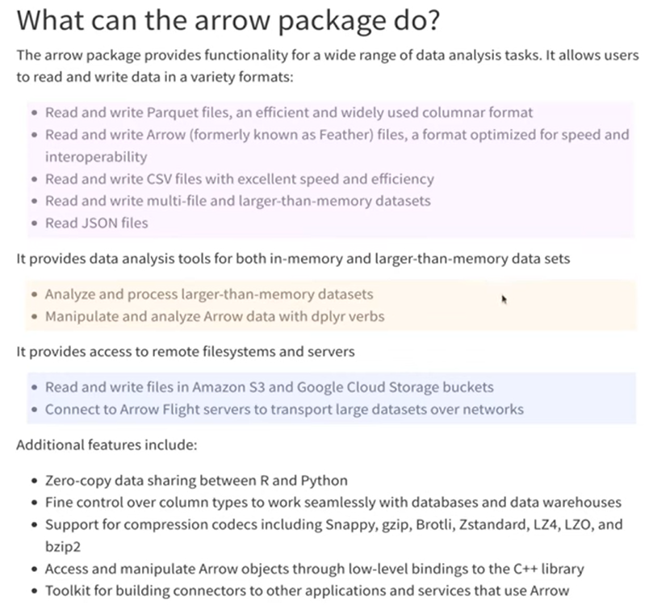
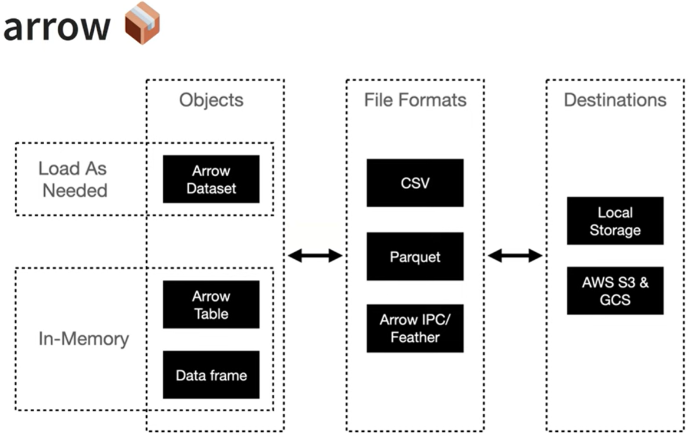
Scaling Up With R and Arrow (https://arrowrbook.com/)
R4DS, Chapter 22 (https://r4ds.hadley.nz/arrow.html)
You’ll learn about a powerful alternative: the parquet format, an open standards-based format widely used by big data systems.
parquet is designed for efficient storage and fast querying, making it ideal for large datasets. It’s a columnar storage format, which means it stores data by columns rather than rows, allowing for better compression and faster read times.
We’ll pair parquet files with Apache Arrow, a cross-language development platform for in-memory data.
We’ll use Apache Arrow via the arrow package, which provides a dplyr backend allowing you to analyze larger-than-memory datasets using familiar dplyr syntax.
Both arrow and dbplyr provide dplyr backends, so you might wonder when to use each.
arrow when working with large datasets stored in parquet files, especially when you want to perform in-memory analytics without the overhead of a database connection.dbplyr when you have data stored in a relational database and want to leverage SQL for querying, especially if you need to perform complex joins or transactions that are better handled by a database system.data.seattle.gov/Community/Checkouts-by-Title/tmmm-ytt6
Item checkout data from Seattle public libraries
9GB CSV file
50.3M
12
Checkout Count
Columns (12)
| Column Name | Description | API Field Name | Data Type |
|---|---|---|---|
| UsageClass | Denotes if item is “physical” or “digital” | usageclass | Text |
| CheckoutType | Denotes the vendor tool used to check out the item. | checkouttype | Text |
| MaterialType | Describes the type of item checked out (examples: book, song movie, music, magazine) | materialtype | Text |
| CheckoutYear | The 4-digit year of checkout for this record. | checkoutyear | Number |
| CheckoutMonth | The month of checkout for this record. | checkoutmonth | Number |
| Checkouts | A count of the number of times the title was checked out within the “Checkout Month”. | checkouts | Number |
| Title | The full title and subtitle of an individual item | title | Text |
| ISBN | A comma separated list of ISBNs associated with the item record for the checkout. | isbn | Text |
| Creator | The author or entity responsible for authoring the item. | creator | Text |
| Subjects | The subject of the item as it appears in the catalog | subjects | Text |
| Publisher | The publisher of the title | publisher | Text |
| PublicationYear | The year from the catalog record in which the item was published, printed, or copyrighted. | publicationyear | Text |
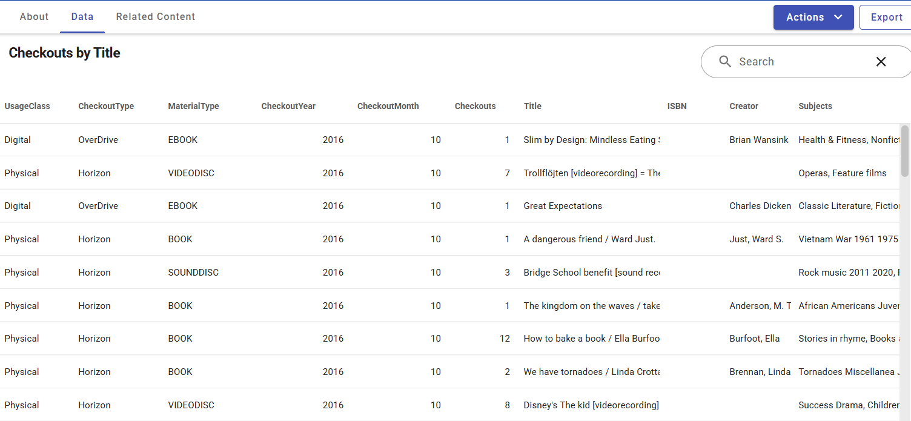
To get started with arrow, you can install the package from CRAN:
# A tibble: 1 × 10
success status_code resumefrom url destfile error type modified
<lgl> <dbl> <dbl> <chr> <chr> <chr> <chr> <dttm>
1 TRUE 416 0 https… "C:\\Us… <NA> appl… NA
# ℹ 2 more variables: time <dbl>, headers <list>A good rule of thumb is that you usually want at least twice as much memory as the size of the data, and many laptops top out at 16 GB.
This means we want to avoid read_csv() and instead use the arrow::open_dataset():
open_dataset() and save it as an object, it becomes a schema object> seattle_csv
FileSystemDataset with 1 csv file
12 columns
UsageClass: string
CheckoutType: string
MaterialType: string
CheckoutYear: int64
CheckoutMonth: int64
Checkouts: int64
Title: string
ISBN: string
Creator: string
Subjects: string
Publisher: string
PublicationYear: string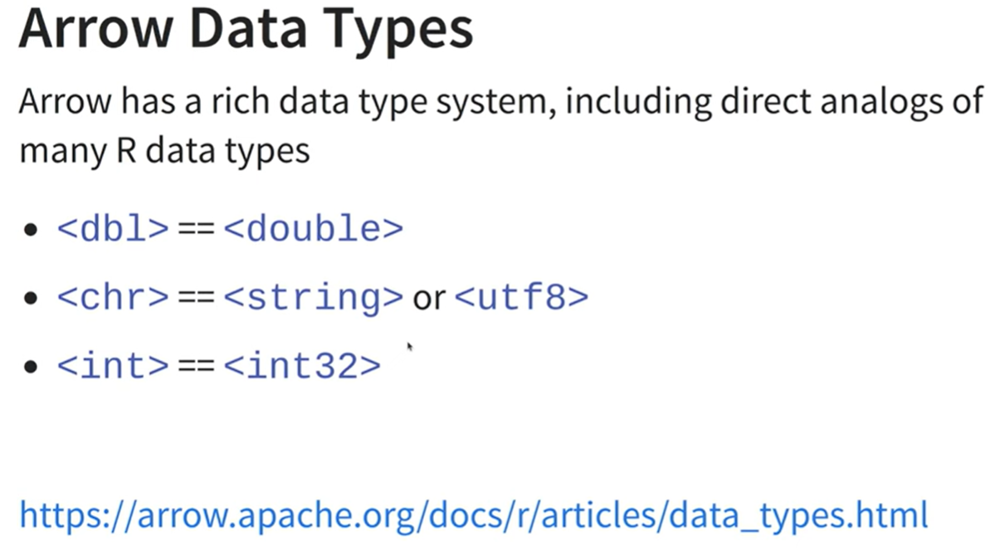
FileSystemDataset with 1 csv file
12 columns
UsageClass: string
CheckoutType: string
MaterialType: string
CheckoutYear: int64
CheckoutMonth: int64
Checkouts: int64
Title: string
ISBN: string
Creator: string
Subjects: string
Publisher: string
PublicationYear: string
Schema
UsageClass: string
CheckoutType: string
MaterialType: string
CheckoutYear: int64
CheckoutMonth: int64
Checkouts: int64
Title: string
ISBN: string
Creator: string
Subjects: string
Publisher: string
PublicationYear: string
[1] 41389465
FileSystemDataset with 1 csv file
41,389,465 rows x 12 columns
$ UsageClass <string> "Physical", "Physical", "Digital", "Physical", "Physi…
$ CheckoutType <string> "Horizon", "Horizon", "OverDrive", "Horizon", "Horizo…
$ MaterialType <string> "BOOK", "BOOK", "EBOOK", "BOOK", "SOUNDDISC", "BOOK",…
$ CheckoutYear <int64> 2016, 2016, 2016, 2016, 2016, 2016, 2016, 2016, 2016,…
$ CheckoutMonth <int64> 6, 6, 6, 6, 6, 6, 6, 6, 6, 6, 6, 6, 6, 6, 6, 6, 6, 6,…
$ Checkouts <int64> 1, 1, 1, 1, 1, 1, 1, 1, 4, 1, 1, 2, 3, 2, 1, 3, 2, 3,…
$ Title <string> "Super rich : a guide to having it all / Russell Simm…
$ ISBN <string> "", "", "", "", "", "", "", "", "", "", "", "", "", "…
$ Creator <string> "Simmons, Russell", "Barclay, James, 1965-", "Tim Par…
$ Subjects <string> "Self realization, Conduct of life, Attitude Psycholo…
$ Publisher <string> "Gotham Books,", "Pyr,", "Random House, Inc.", "Dial …
$ PublicationYear <string> "c2011.", "2010.", "2015", "2005.", "c2004.", "c2005.…collect() to force arrow to perform the computation and return some data.FileSystemDataset (query)
CheckoutYear: int64
checkouts: int64
* Sorted by CheckoutYear [asc]
See $.data for the source Arrow object
# A tibble: 18 × 2
CheckoutYear checkouts
<int> <int>
1 2005 3798685
2 2006 6599318
3 2007 7126627
4 2008 8438486
5 2009 9135167
6 2010 8608966
7 2011 8321732
8 2012 8163046
9 2013 9057096
10 2014 9136081
11 2015 9084179
12 2016 9021051
13 2017 9231648
14 2018 9149176
15 2019 9199083
16 2020 6053717
17 2021 7361031
18 2022 7001989parquet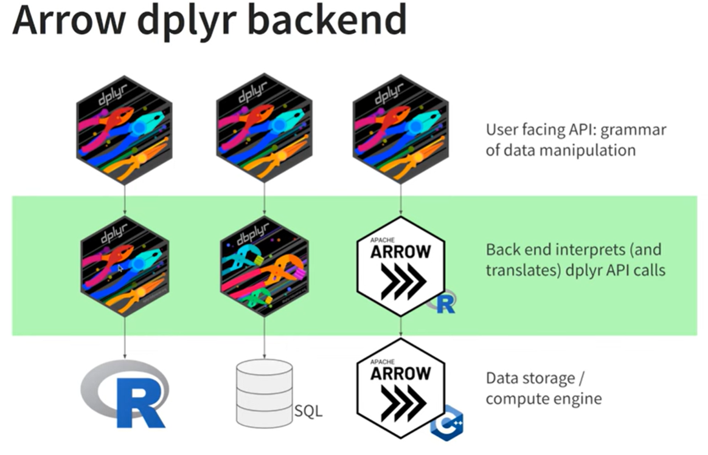
Output:
FileSystemDataset (query)
MaterialType: string
IsBook: bool (ends_with(MaterialType, {pattern="BOOK", ignore_case=false}))
See $.data for the source Arrow objectNothing is pulled into memory yet.
Output:
Table (query)
MaterialType: string
IsBook: bool (ends_with(MaterialType, {pattern="BOOK", ignore_case=false}))
See $.data for the source Arrow object```{r}
#| eval: false
seattle_csv |>
head(20) |>
mutate(IsBook = endsWith(MaterialType, "BOOK")) |>
select(MaterialType, IsBook) |>
collect() # dplyr
seattle_csv |>
filter(endsWith(MaterialType, "BOOK")) |>
group_by(CheckoutYear) |>
summarise(Checkouts = sum(Checkouts)) |>
arrange(CheckoutYear) # query: source Arrow object
seattle_csv |>
filter(endsWith(MaterialType, "BOOK")) |>
group_by(CheckoutYear) |>
summarise(Checkouts = sum(Checkouts)) |>
arrange(CheckoutYear) |>
collect() #18 rows of a tible dataframe
seattle_csv |>
filter(endsWith(MaterialType, "BOOK")) |>
group_by(CheckoutYear) |>
summarise(Checkouts = sum(Checkouts)) |>
arrange(CheckoutYear) |>
collect() |>
system.time()
```Arrow schema data takes long time to query.
user system elapsed
14.25 5.43 14.69 collect() vs. compute()collect()
Executes the query and pulls the result into R as a local tibble. Now the data lives in your R session’s memory.
Use it as the final step when you’re done filtering/aggregating and need the data for plotting, modeling, or exporting.
compute()
Executes the query but keeps the result on the remote/backend side (database table, Arrow dataset, etc.). It materializes the result into a temporary table in-place without pulling data into R memory.
Use it when you want to checkpoint an intermediate result that you’ll query again — avoids re-running expensive upstream steps.
```{r}
#| eval: false
seattle_csv_compute <- seattle_csv |>
filter(endsWith(MaterialType, "BOOK")) |>
group_by(CheckoutYear) |>
summarise(Checkouts = sum(Checkouts)) |>
arrange(CheckoutYear) |>
compute()
seattle_csv_compute |> nrow()
seattle_csv_compute |> print()
seattle_csv_compute |> glimpse()
seattle_csv_compute |> head()
seattle_csv_compute |> skimr::skim()
seattle_csv_compute |> collect()
```dplyr| Feature | collect() |
compute() |
|---|---|---|
| Where result lives | Local R memory | Remote source (DB, Spark) |
| Return type | Local tibble/data frame | Remote tbl reference |
| Use case | Final step; bring data into R | Intermediate step; cache in DB |
| Memory impact | Uses R’s RAM | Uses remote storage |
| Further lazy ops? | No (it’s local now) | Yes (still a remote reference) |
Use collect() when you’re done querying and need the data in R for plotting, modeling, or export.
Use compute() when your query is complex/expensive and you want to cache an intermediate result in the database to build further queries on top of it — avoiding recomputation.
A common pattern is to use compute() for heavy intermediate transformations, then collect() at the very end:
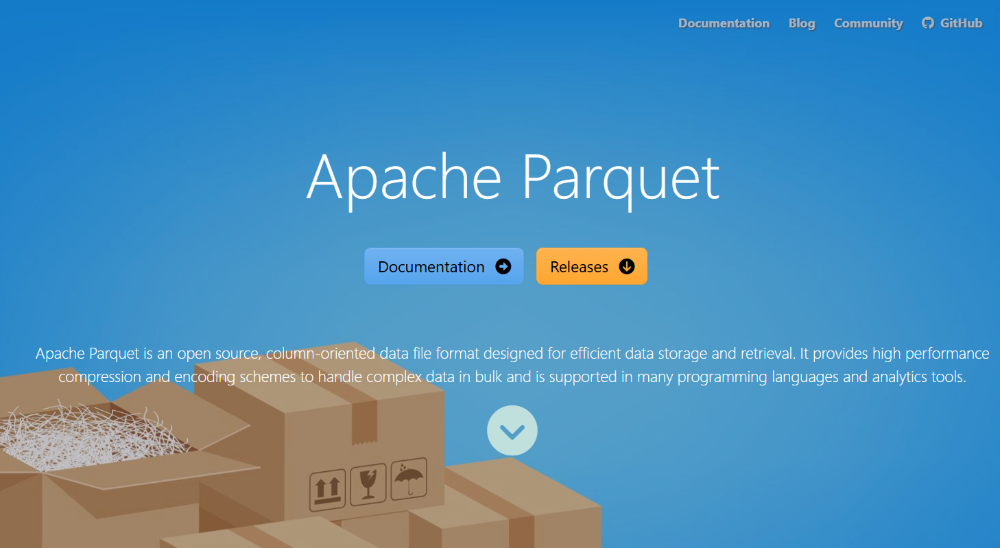
Apache Parquet is an open-source columnar storage file format designed for efficient data storage and retrieval, particularly in big data ecosystems.
parquet is used for rectangular data.
It is a custom binary format specifically for the needs of big data.
Compression — Similar values stored together compress extremely well (e.g., a column of integers vs. mixed row data). Supports Snappy, Gzip, Zstd, etc.
Predicate pushdown — Stores min/max statistics per row group, so query engines can skip entire chunks of data without reading them.
Schema evolution — Columns can be added or removed over time without rewriting old files.
Nested data support — Handles complex types like arrays, maps, and structs (using Dremel encoding).
Language agnostic — Readable by Python, R, Java, Scala, C++, and more.
| Scenario | Benefit |
|---|---|
Analytical queries (SELECT col_a, col_b) |
Only reads needed columns → much faster |
| Large datasets | 5–10x smaller than equivalent CSV |
| Cloud storage (S3, GCS) | Fewer bytes transferred = lower cost |
| Distributed systems | Works natively with Spark, Hive, Presto, Dask |
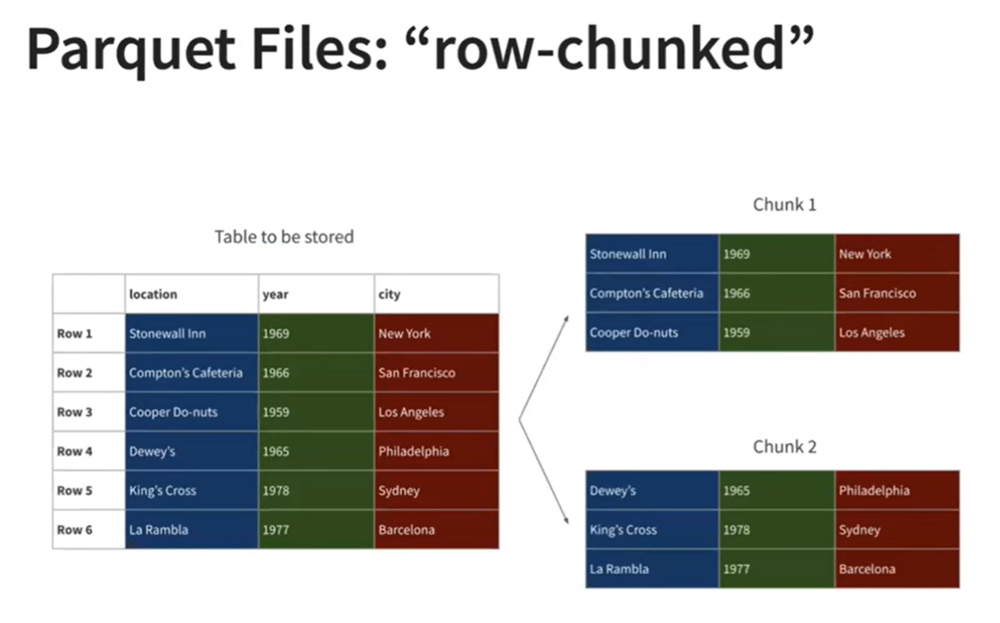
| Comparison Dimensions | CSV | Parquet |
|---|---|---|
| File size | Larger | Smaller, compressed |
| Speed | Slower | Faster |
| Ability to identify file type | No information | Has a rich type system about column |
| Organization | Row-oriented | Column-oriented |
| Operation | Not Chunked | Chunked |
| Readerable? - readr::read_file() | Readeable to humans | Unreadeable to humans |
| Format | Type | Compressed | Columnar | Human-readable |
|---|---|---|---|---|
| CSV | Row | No | No | Yes |
| JSON | Row | No | No | Yes |
| Feather/Arrow | Columnar | Optional | Yes | No |
| Parquet | Columnar | Yes | Yes | No |
| ORC | Columnar | Yes | Yes | No |
Parquet has become essentially the standard format for data lakes and analytics pipelines — you’ll find it everywhere from AWS S3 + Athena to Databricks to dbt projects.
Split the file into multiple files
Parquet
Partitioning
Apply the concept to the Seattle library data
Output:
FileSystemDataset with 1 Parquet file
12 columns
UsageClass: string
CheckoutType: string
MaterialType: string
CheckoutYear: int64
CheckoutMonth: int64
Checkouts: int64
Title: string
ISBN: string
Creator: string
Subjects: string
Publisher: string
PublicationYear: stringOutput:
user system elapsed
5.75 3.81 2.05 Output:
[1] 4.416318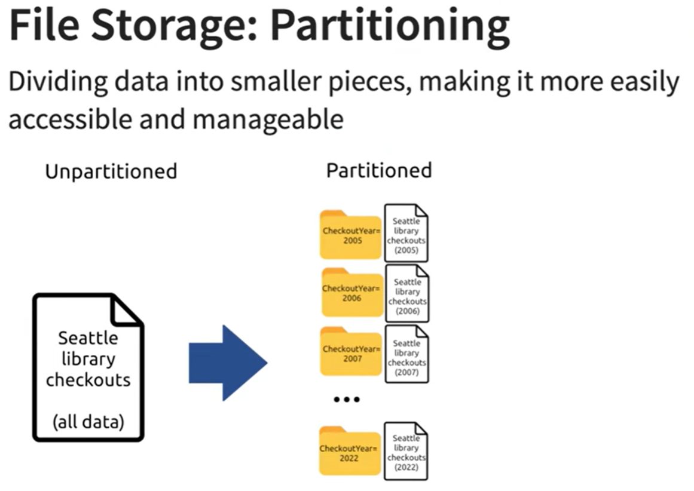
Why Petitioning?
As datasets get larger and larger, storing all the data in a single file gets increasingly painful and it’s often useful to split large datasets across many files.
Many analyses will only require a subset of the files.
No hard and fast rules about how to partition your dataset;
Rough guideline
Avoid files smaller than 20MB and larger than 2GB
Avoid partitions that produce more than 10,000 files.
Partition by variables that you filter by
# A tibble: 18 × 2
CheckoutYear Checkouts
<int> <int>
1 2005 2129128
2 2006 3385869
3 2007 3679981
4 2008 4156859
5 2009 4500788
6 2010 4389760
7 2011 4484366
8 2012 4696376
9 2013 5394411
10 2014 5606168
11 2015 5784864
12 2016 5915722
13 2017 6280679
14 2018 6831226
15 2019 7339010
16 2020 5549585
17 2021 6659627
18 2022 6301822Output:
user system elapsed
4.17 1.94 1.54 There was not a huge gain in speed beween one parquet file and partitioning.
```{r}
#| eval: false
# filtering by CheckoutYear as well
open_dataset(sources = seattle_parquet_part, format = "parquet") |>
filter(CheckoutYear == 2020, endsWith(MaterialType, "BOOK")) |>
group_by(CheckoutYear) |>
summarise(Checkouts = sum(Checkouts)) |>
arrange(CheckoutYear) |>
collect() |>
system.time()
```Output:
user system elapsed
0.28 0.15 0.11 Output:
user system elapsed
13.33 5.89 14.75This takes about a minute to run; as we’ll see shortly this is an initial investment that pays off by making future operations much much faster.
- Observe the partitioned files
# A tibble: 18 × 2
files size_MB
<chr> <dbl>
1 CheckoutYear=2005/part-0.parquet 109.
2 CheckoutYear=2006/part-0.parquet 164.
3 CheckoutYear=2007/part-0.parquet 177.
4 CheckoutYear=2008/part-0.parquet 194.
5 CheckoutYear=2009/part-0.parquet 214.
6 CheckoutYear=2010/part-0.parquet 222.
7 CheckoutYear=2011/part-0.parquet 238.
8 CheckoutYear=2012/part-0.parquet 248.
9 CheckoutYear=2013/part-0.parquet 268.
10 CheckoutYear=2014/part-0.parquet 282.
11 CheckoutYear=2015/part-0.parquet 293.
12 CheckoutYear=2016/part-0.parquet 300.
13 CheckoutYear=2017/part-0.parquet 304.
14 CheckoutYear=2018/part-0.parquet 292.
15 CheckoutYear=2019/part-0.parquet 288.
16 CheckoutYear=2020/part-0.parquet 151.
17 CheckoutYear=2021/part-0.parquet 228.
18 CheckoutYear=2022/part-0.parquet 240.
# A tibble: 1 × 1
total_size
<dbl>
1 4212.dplyr and arrowFileSystemDataset with 18 Parquet files
12 columns
UsageClass: string
CheckoutType: string
MaterialType: string
CheckoutMonth: int64
Checkouts: int64
Title: string
ISBN: string
Creator: string
Subjects: string
Publisher: string
PublicationYear: string
CheckoutYear: int32dplyr pipeline```{r}
#| eval: true
seattle_pq |>
select(CheckoutYear, CheckoutMonth, MaterialType, Checkouts) |>
group_by(CheckoutYear) |>
collect()
seattle_pq |>
count(CheckoutYear, CheckoutMonth, Checkouts) |>
mutate(Total_checkouts = sum(Checkouts)) |>
arrange(CheckoutYear, CheckoutMonth, Checkouts) |>
collect()
```# A tibble: 41,389,465 × 4
# Groups: CheckoutYear [18]
CheckoutYear CheckoutMonth MaterialType Checkouts
<int> <int> <chr> <int>
1 2005 4 BOOK 1
2 2005 4 BOOK 3
3 2005 4 BOOK 1
4 2005 4 BOOK 1
5 2005 4 BOOK 1
6 2005 4 SOUNDDISC 4
7 2005 4 BOOK 4
8 2006 1 BOOK 1
9 2005 4 BOOK 2
10 2005 4 BOOK 1
# ℹ 41,389,455 more rows
# A tibble: 46,024 × 5
CheckoutYear CheckoutMonth Checkouts n Total_checkouts
<int> <int> <int> <int> <int>
1 2005 4 1 69774 6323670
2 2005 4 2 21471 6323670
3 2005 4 3 10260 6323670
4 2005 4 4 5583 6323670
5 2005 4 5 3398 6323670
6 2005 4 6 2160 6323670
7 2005 4 7 1371 6323670
8 2005 4 8 915 6323670
9 2005 4 9 642 6323670
10 2005 4 10 441 6323670
# ℹ 46,014 more rowscollect()FileSystemDataset (query)
CheckoutYear: int32
CheckoutMonth: int64
TotalCheckouts: int64
* Grouped by CheckoutYear
* Sorted by CheckoutYear [asc], CheckoutMonth [asc]
See $.data for the source Arrow object
# A tibble: 58 × 3
# Groups: CheckoutYear [5]
CheckoutYear CheckoutMonth TotalCheckouts
<int> <int> <int>
1 2018 1 355101
2 2018 2 309813
3 2018 3 344487
4 2018 4 330988
5 2018 5 318049
6 2018 6 341825
7 2018 7 351207
8 2018 8 352977
9 2018 9 319587
10 2018 10 338497
# ℹ 48 more rowsLike dbplyr, arrow only understands some R expressions, so you may not be able to write exactly the same code you usually would.
However, the list of operations and functions supported is fairly extensive and continues to grow;
Find a complete list of currently supported functions in ?acero. acero is Arrow query engine.
```{r}
#| eval: false
# Task: how long does it take to calculate the number of books checked out in each month of 2021
seattle_csv |>
filter(CheckoutYear == 2021, MaterialType == "BOOK") |>
group_by(CheckoutMonth) |>
summarize(TotalCheckouts = sum(Checkouts)) |>
arrange(desc(CheckoutMonth)) |>
collect() |>
system.time()
``` user system elapsed
12.99 5.44 15.00 user system elapsed
0.42 0.25 0.13 Partitioning improves performance because this query uses CheckoutYear == 2021 to filter the data, and arrow is smart enough to recognize that it only needs to read 1 of the 18 parquet files.
Storing data in binary format can be read more directly into memory
The column-wise format and rich metadata means only four columns are needed: CheckoutYear, MaterialType, CheckoutMonth, and Checkouts
It’s very easy to turn an arrow dataset into a DuckDB database by calling
arrow::to_duckdb():
# A tibble: 58 × 3
# Groups: CheckoutYear [5]
CheckoutYear CheckoutMonth TotalCheckouts
<int> <dbl> <dbl>
1 2022 1 261763
2 2022 2 222464
3 2022 3 251502
4 2022 4 236443
5 2022 5 240284
6 2022 6 249086
7 2022 7 232558
8 2022 8 257218
9 2022 9 239864
10 2022 10 240320
# ℹ 48 more rowsThe neat thing about to_duckdb() is that the transfer doesn’t involve any memory copying, and speaks to the goals of the arrow ecosystem: enabling seamless transitions from one computing environment to another.
Figure out the most popular book each year.
Which author has the most books in the Seattle library system?
How has checkouts of books vs ebooks changed over the last 10 years?
Apache Arrow (https://arrow.apache.org/)
Apache Parquet (https://parquet.apache.org/)
R-Ladies Ottawa (English) - Introduction to Arrow - Nic Crane and Steph Hazlitt, https://www.youtube.com/watch?v=s-6aQ2hYp_E